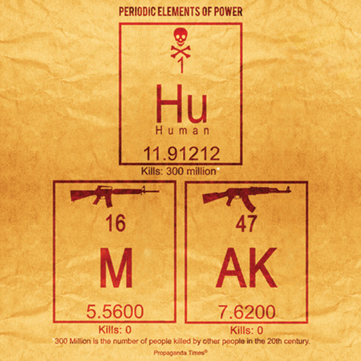

Wed, 01 Dec 2010 10:44:00 · design · infographic
Periodic Elements of Power

This cool visualization is brought to you by Propaganda Times
Wed, 01 Dec 2010 10:44:00 · design · infographic

This cool visualization is brought to you by Propaganda Times